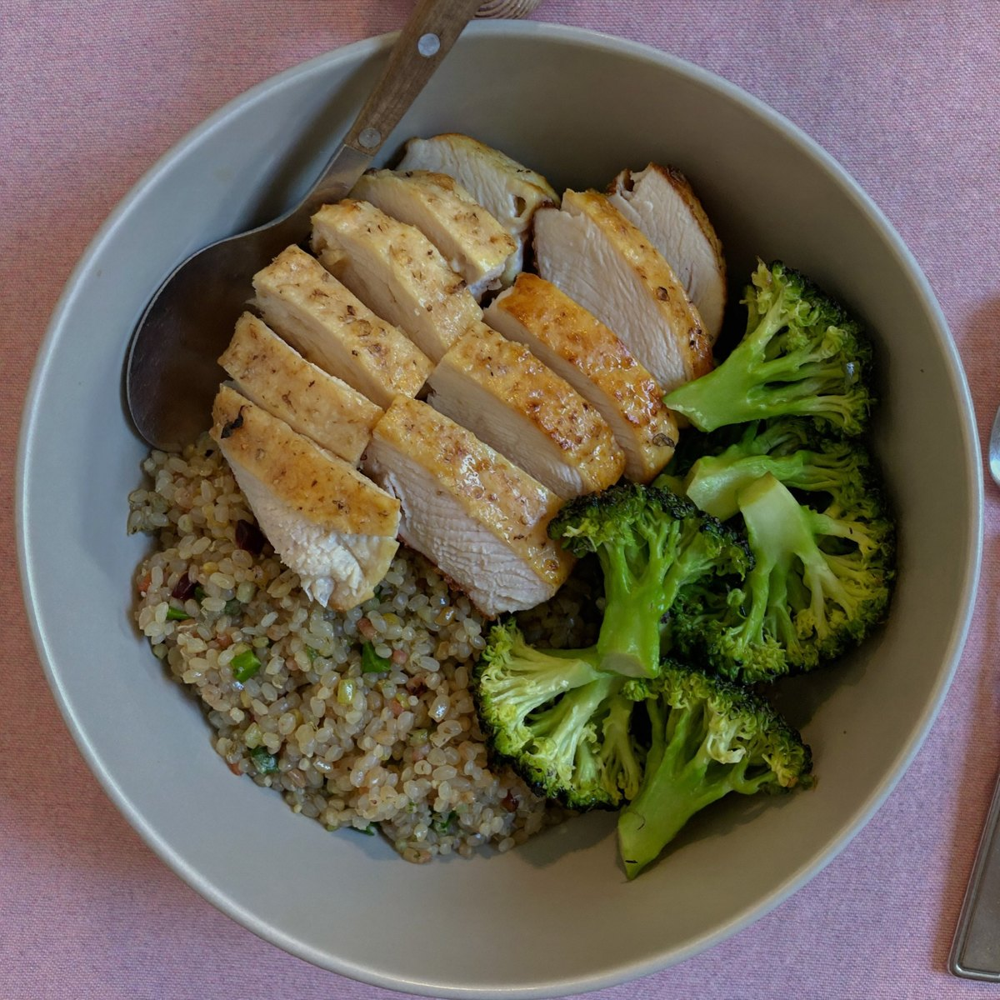
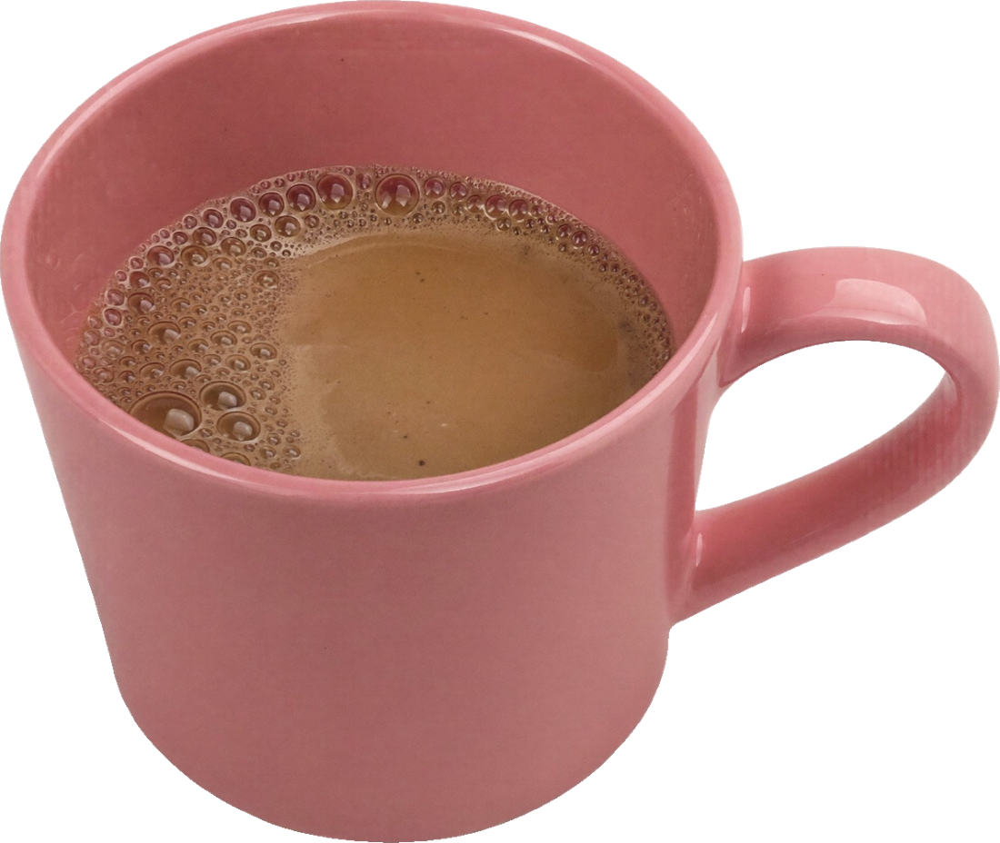
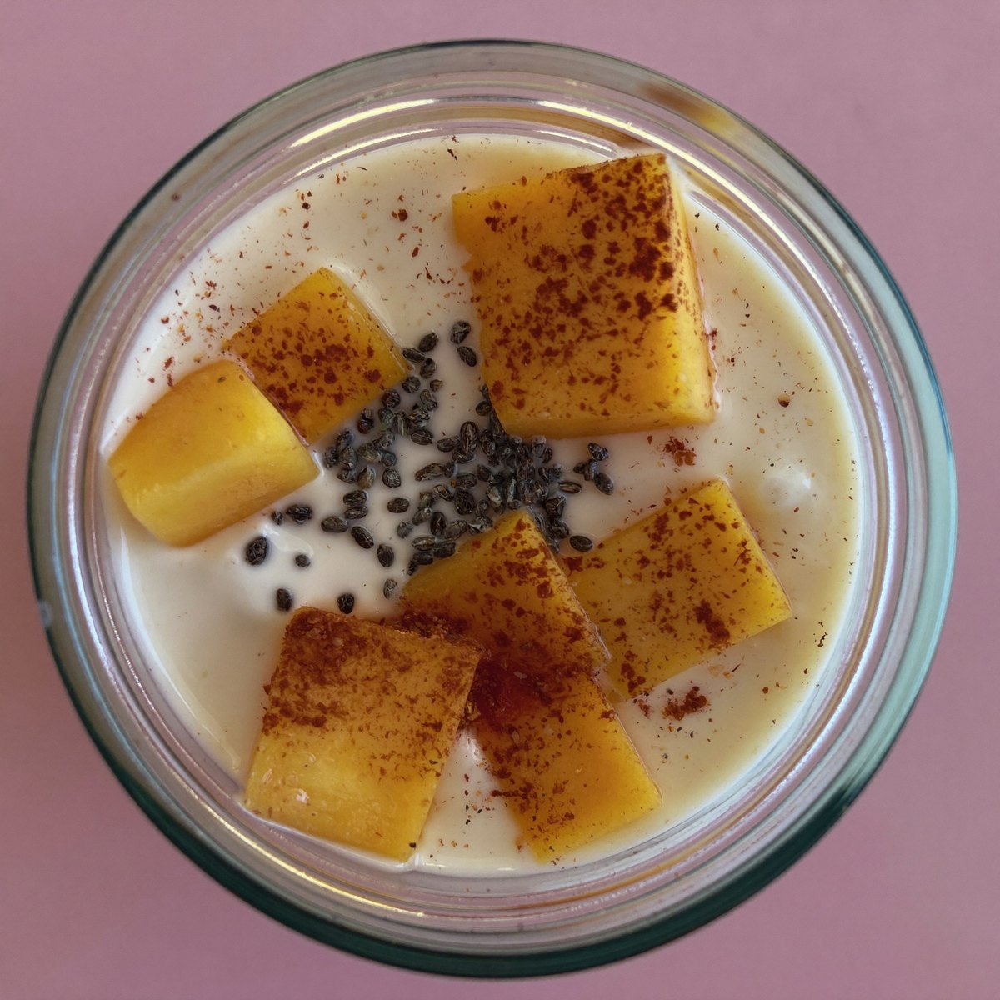
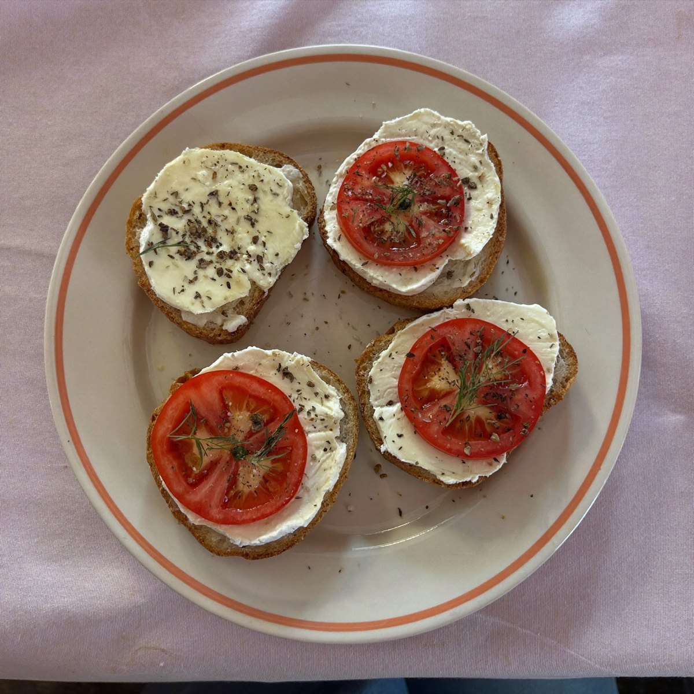
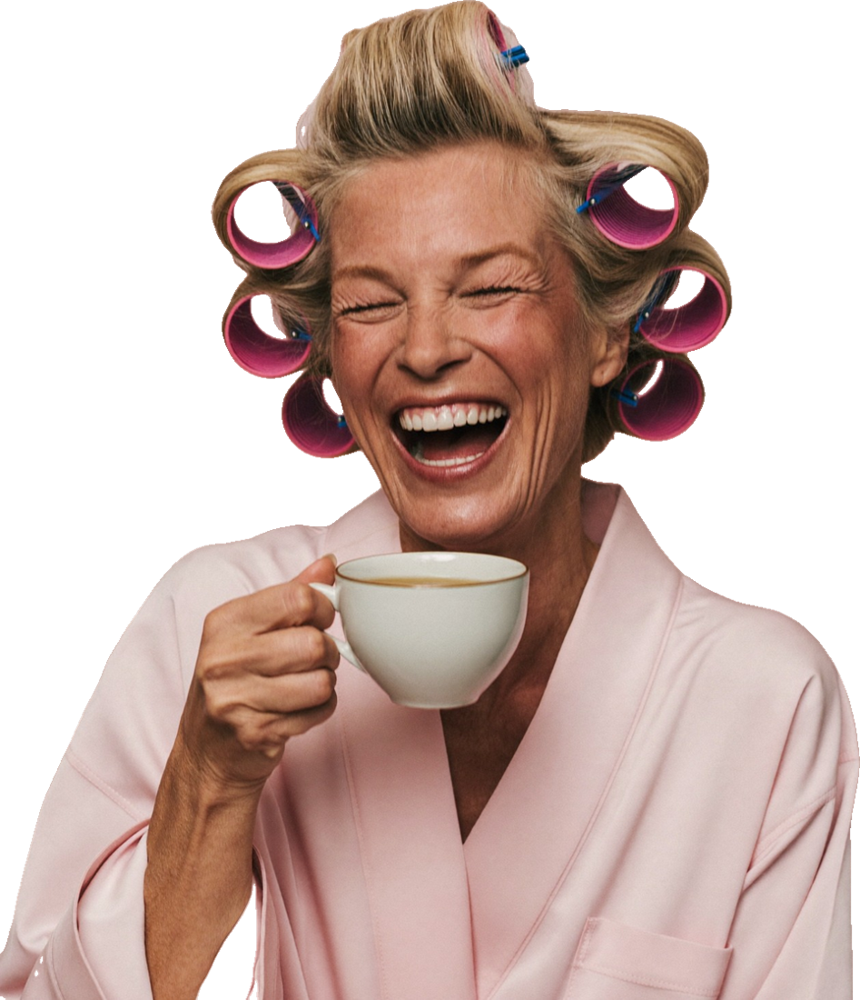

Bono 1 · Menopausia Equilibrada
20 recetas fáciles
Recetario
para la menopausia




5 desayunos
5 almuerzos
5 cenas
5 snacks

Pensado para ti
Proteína para tus músculos
Fibra para sentirte ligera
Ingredientes de tu mercado
Comer rico también es cuidarte.
Bono 1 de 6